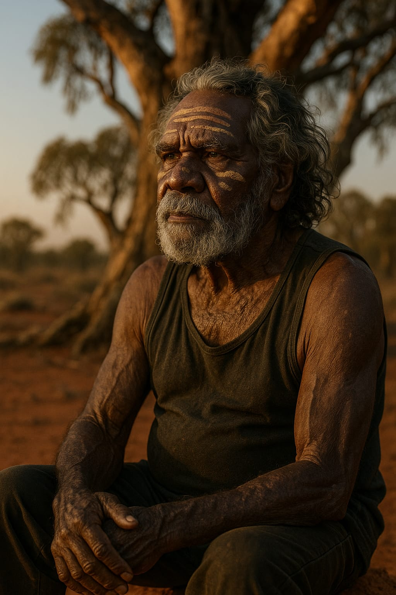
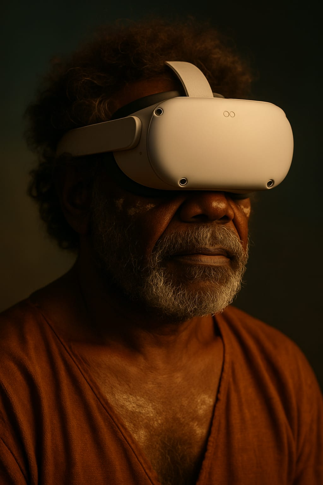

Indigenous Healing · Immersive Technology · Cultural Reconnection
A therapeutic virtual reality metaverse designed with and for Indigenous Australians — using immersive cultural experiences to support recovery from alcohol and substance addiction.
"Healing begins when we remember who we are."
AltrD (pronounced Altered) is a therapeutic metaverse — an immersive virtual reality environment where Indigenous Australians can reconnect with their culture, country, and community as a pathway to healing from alcohol and substance addiction.
Built on clinical evidence for VR-based therapeutic intervention and grounded in Indigenous self-determination, AltrD brings country into the clinical space — giving people a moment of profound reconnection when they need it most.
Led by Dr Jacqui Lavis, AltrD is co-designed with community, governed by community, and measured by outcomes that matter to community.

Country is not a backdrop to healing. Country is the healer.
AltrD · Therapeutic VR Metaverse · Est. 2024
AltrD — pronounced Altered — is a therapeutic metaverse designed with and for Aboriginal and Torres Strait Islander peoples. It is the first program of its kind in the world: a culturally governed, immersive virtual reality experience that uses connection to Country, culture, and community as the primary mechanism for supporting recovery from alcohol and substance addiction.
The name is deliberate. AltrD is about altered states — but not the kind that come from substances. The kind that come from standing on your own country, hearing an elder speak in language, sitting by a campfire under a sky that has watched over your ancestors for sixty thousand years. That kind of altered state is not a side effect. It is the medicine.
AltrD was founded by Dr Jacqui Lavis, a strategist and storyteller with deep roots in Far North Queensland and a lifelong commitment to the wellbeing of Indigenous communities. The program is built on a simple but radical premise: that healing does not begin with a diagnosis. It begins with belonging.
The program combines three clinically validated mechanisms: VR-based cue exposure therapy, which helps participants regulate cravings in a safe and controlled environment; cultural reconnection, which systematic reviews show is a primary protective factor for Indigenous recovery; and motivational interviewing-aligned conversational guidance through an AI-assisted cultural companion. Together, these are delivered through an immersive 360° filmed experience on Country — not a computer-generated simulation, but real places, real voices, real country.
AltrD is currently in Stage 1 development, supported by seed funding and a growing network of research, clinical, and community partners. It is designed to be evaluated rigorously, published in peer-reviewed journals, and scaled nationally and internationally to every community facing similar challenges.
The evidence is clear: cultural self-determination is not a cultural add-on to clinical care. It is the clinical care. AltrD is built on the principle that healing for Aboriginal and Torres Strait Islander peoples begins with belonging — to country, to community, to the stories that have carried people through sixty thousand years of unbroken existence. Virtual reality gives us the ability to bring that belonging into the clinical room when the clinical room is the only place someone can be reached.
Every design decision in AltrD is traced to peer-reviewed evidence. The clinical mechanisms — cue exposure therapy, trauma-informed graduated exposure, motivational interviewing pathways — are supported by Level I systematic reviews. The cultural mechanisms — connection to Country, elder guidance, community belonging — are supported by First Nations-led research. AltrD does not ask communities to trust promises. It asks them to participate in building the evidence that justifies that trust.
The problem AltrD addresses is not uniquely Australian. Indigenous peoples in Canada, New Zealand, the United States, and across the Pacific face the same intersection of dispossession, intergenerational trauma, and inadequate mainstream treatment services. A culturally governed VR platform that proves its value in Far North Queensland becomes a template for adaptation globally.
The crisis is well documented. What has been missing is a response built with the communities it is designed to serve.
Indigenous Australians who drink at risky levels experience substantially worse outcomes. Existing services are not designed for cultural context, leading to disengagement and relapse. The system was not built with community — and community knows it.
Systematic review evidence shows cultural self-determination and community governance are the critical success factors that mainstream clinical programmes consistently lack. Culture is not a supplement to treatment — it is the treatment.
No peer-reviewed published study has evaluated VR-based therapeutic intervention for alcohol use disorder in Aboriginal or Torres Strait Islander populations. AltrD will change that — with community, not for community.
AltrD integrates three clinically validated mechanisms within a culturally governed framework. The evidence base is Level I — the strongest available in clinical research.
Systematic review of randomised controlled trial evidence demonstrates strong positive effects for virtual reality intervention in alcohol use disorder. When people are safely exposed to cues in a controlled immersive environment, craving responses are reduced and extinction learning is accelerated.
Glavak-Tkalić et al., 2025 · Level I Evidence · 17/20 RCTs positiveSystematic reviews of Indigenous-specific substance use interventions consistently identify cultural self-determination and healing on country as the primary protective and therapeutic factors. Identity, belonging, and connection to country are not secondary outcomes — they are the mechanism of recovery.
Krakouer et al., 2022 · Level I EvidenceAI-guided conversational pathways aligned with motivational interviewing frameworks support agency, self-efficacy, and self-determination in the recovery process. The AltrD environment responds to the individual — meeting them in their readiness, not prescribing a stage they have not yet reached.
Evidence-Based Framework · Miller & Rollnick, 2013Put on the headset. You are standing on country — red earth, ancient rock shelters, the sound of wind moving through spinifex. A wedge-tailed eagle crosses the sky overhead.
An elder's voice speaks to you — in language, in story, in the cadence that has carried this country for sixty thousand years. The clinical room disappears. The craving that brought you here begins to soften — not through willpower, but through something older and more durable: a sense of belonging, of place, of self.
This is not escapism. This is return. The VR environment is not designed to take you away from yourself — it is designed to bring you back.
The AltrD proof of concept is a two-minute immersive experience demonstrating what becomes possible when technology steps back and culture steps forward. The headset is a doorway. What lies on the other side is home.
Photorealistic and culturally authentic VR environments — specific to the country, language group, and community of each participant. Not a generic "nature experience". Country.
Community elders co-design and voice the therapeutic environment. Language, song, and story are embedded in the experience from the ground up — never extracted, always given.
Conversational AI aligned with motivational interviewing frameworks responds to the individual in real time — no two sessions are identical. The environment meets the person, not the protocol.
Designed for deployment within existing health services — hospital wards, community health centres, residential treatment facilities. Requires only a standalone VR headset and fifteen minutes of clinical time.
AltrD cannot succeed without the right partners at every layer. We are not looking for funders who want to attach their name to Indigenous health. We are looking for organisations willing to build something genuinely new — with us, not for us.
ACCHOs are the governing backbone of AltrD. Community-led governance is not an add-on to the clinical framework — it is the clinical framework. We are actively seeking ACCHO partners in Far North Queensland and beyond for co-design, ethics review, and deployment.
We are seeking academic partners to co-design the first peer-reviewed RCT of VR-based therapeutic intervention in an Indigenous Australian population. Ethics, trial design, publication, and knowledge translation are all areas of active collaboration.
Hospital networks, Primary Health Networks, and Medicare-funded alcohol and other drug services seeking evidence-based, culturally appropriate interventions that move beyond engagement as an outcome and measure recovery as the communities themselves define it.
VR hardware partners, immersive media developers, and Indigenous content creators building the environments. AltrD is a platform, not a product — and the technology layer must be as culturally governed as everything else.

AltrD places participants in immersive cultural environments — bringing country into the clinical space.
We are currently in active development of the proof of concept and seeking partners for the pilot phase. Get in touch to start a conversation.
AltrD is not designed as a product looking for evidence after the fact. The research pipeline is built into the architecture — community governance first, ethics next, evidence throughout.
Phase 1 · Current
Co-design of the two-minute immersive VR experience with community elders and health workers. Ethics application in development. Community governance structure established.
Phase 2 · 2025
Single-arm pilot with n=10–15 participants within an ACCHO-governed health service. Primary outcomes: feasibility, acceptability, and preliminary craving reduction data.
Phase 3 · 2026
Crossover design RCT with target enrolment n=40. Primary outcome: craving reduction measured by Visual Analogue Scale and AUDIT-C. Secondary outcomes: treatment engagement, cultural connectedness, and self-reported wellbeing.
Phase 4 · 2027+
Peer-reviewed publication of the first RCT of its kind globally. Open-source protocol for adaptation by other communities. Policy and funding advocacy based on Level I evidence.
"We are not doing research on community. We are doing research with community — and the questions we ask are the ones community says matter."
Dr Jacqui Lavis, AltrD Founder
What AltrD is attempting in 12 months would normally take 5 years. This is how we are compressing that timeline without compromising scientific rigour or cultural integrity.
Before a single frame was filmed or a line of code written, AltrD commissioned a comprehensive, publication-grade research foundation — a full evidence synthesis, a scoping review manuscript ready for peer-reviewed journal submission, and a PRISMA-ScR flow diagram. This work, which would typically take 3–6 months, was completed in days using advanced AI research architecture. Every design decision is already scientifically defensible. No rework. No retrofitting evidence to decisions already made.
AltrD is not trying to build clinical trial infrastructure from scratch. Professor Lucia Valmaggia of Orygen's XR Innovation Lab at the University of Melbourne — ranked among the top three VR mental health researchers in the world — has been identified as the ideal research partner. Orygen already has the ethics frameworks, clinical trial methodology, and publication pipeline. AltrD brings the cultural governance and community authority Orygen cannot build internally. Together, the first peer-reviewed evidence for culturally governed VR therapy with Indigenous Australians becomes achievable within Stage 1.
The AltrD PoC will be a 360° filmed experience on Country — real country, real elders, real cultural content filmed with full community consent and governance. Delivered via Meta Quest headsets using the Wonda VR platform, it requires no custom software development and no budget beyond what is already committed. The PoC is not a product. It is a demonstration that changes minds in the room — the kind of experience that makes a funder reach for their pen.
AltrD has identified over $34 million in applicable grant funding across 10+ funding bodies — QMHC, Ian Potter Foundation, NHMRC, MRFF, PHN, and others — with specific eligibility analysis, submission timelines, and probability assessments for each. The strategy sequences applications to build momentum: small wins first, major grants when partnership credentials and PoC evidence are in place. No single grant is a dependency. The funding strategy is diversified, staged, and evidence-backed.
Nothing in AltrD moves without community governance. An Aboriginal Community Controlled Organisation is required as the lead applicant for the largest available grant — and that is not a compliance requirement, it is the design. AltrD is not a product delivered to communities. It is a platform built by communities. Community ownership is what makes it last beyond any single program cycle, any single grant period, any single government priority.
AltrD moves from proof-of-concept to scalable impact in three stages — each building on the last, each generating the evidence and momentum needed to unlock the next.
Strategic foundation, research report, scoping review manuscript, website launch ✓ Complete
Ian Potter Foundation EOI submission (28 May deadline). Community governance partner identified (Gindaja or equivalent ACCO). First elder co-design consultation.
360° filming on Country with elder consent. Wonda VR PoC build. First headset demonstration at clinical site.
PoC demonstrated to Orygen XR Lab. Scoping review submitted to Drug and Alcohol Review. QMHC grant result expected.
NHMRC Partnership Projects application submitted (with Orygen as institutional partner). Ethics application to JCU HREC submitted.
MVP build — expanded cultural content, AI conversational guide, clinical safety protocols. Beta testing with volunteer participants (with ethics approval).
MRFF IHRF 2026 application submitted. First peer-reviewed publication data emerging from beta.
MVP operational. Early outcome data collected. Stage 3 funding strategy finalised.
Stage 2 funding secured. Platform scaling architecture deployed.
Expansion to additional communities. Clinical trial Phase II design finalised.
Full published evidence base emerging. National rollout strategy activated. International partnerships explored.
Total funding target across 3 stages
AltrD is built on the belief that healing is a collective act. We are calling for people who want to contribute their skills, time, knowledge, or resources to help build something that has never existed before.
We need people to help coordinate community consultations, manage research data, support grant applications, and assist with literature review and documentation. Students and recent graduates in health, social work, psychology, or public health are strongly encouraged.
We are looking for experienced videographers skilled in 360° and documentary-style filming, video editing, and content publishing. Indigenous applicants have a significant advantage — access to restricted cultural sites requires community relationship and trust that cannot be bought or assumed.
Indigenous applicants welcomed — cultural access privileges apply
We are seeking volunteer participants experiencing alcohol or other drug challenges who are willing to experience the AltrD prototype and provide honest feedback. All participation is strictly confidential, voluntary, and ethically supervised. Your experience will directly shape a tool designed to help people like you.
Ethics approval required before participation begins — currently in preparation
If you believe in the mission, your financial contribution — whether philanthropic or investment — directly accelerates the timeline from concept to clinical impact. Every dollar shortens the time between now and a working tool in the hands of communities that need it. Tax-deductible donation pathways being established.
We are seeking pro bono or subsidised support from lawyers (IP, contracts, ethics), accountants, technology providers, clinical advisors, and business mentors. If you have expertise and want to apply it to something that matters — this is it.
If you are an Aboriginal Community Controlled Health Organisation, community group, rehabilitation service, or health provider interested in piloting AltrD or participating in co-design — we want to hear from you. Community governance is not optional — it is the foundation.
Whether you are a researcher, funder, community organisation, health service, or someone with lived experience — if you see the potential of culturally governed therapeutic VR, we want to hear from you. Jacqui reads every message.